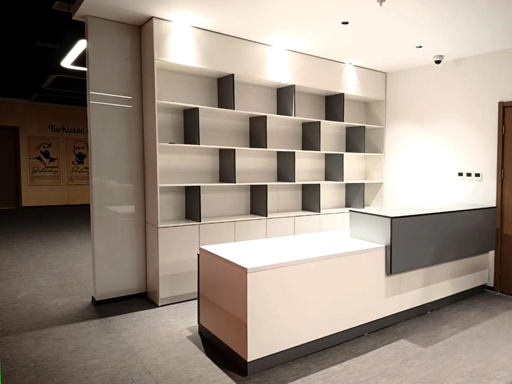
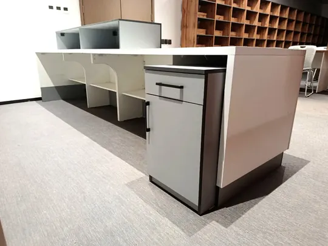
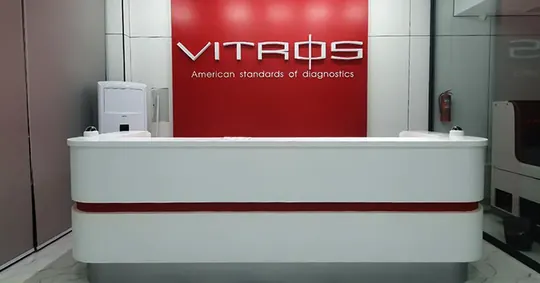

Мебель для коммерческого интерьера
Подробнее о проектеCOLOURWAY DESIGN · ТАШКЕНТ
Стойки ресепшн, витрины и конструкции для торговых и рабочих пространств.
Индивидуальная мебель, стойки ресепшн, витрины и металлические конструкции. Проектируем изделия под размеры и задачи вашего пространства.
Обсудить проект
Уточняем задачу и место размещения, готовим визуальное решение, согласовываем материалы, производим и монтируем изделие.
Стоимость зависит от размеров, конструкции, материалов и особенностей монтажа. Точные параметры согласуем после получения заявки.
Создать макет и отправить заявкуМебель для коммерческого интерьера
Подробнее о проекте
Стойка со стороны рабочего места. Под столешницей расположены открытые секции и тумба с ящиком.
Подробнее о проекте
Боковой ракурс стойки показывает длинную столешницу и приподнятую секцию с полками.
Подробнее о проекте
Стойка ресепшн
VitrosОткройте фотографию, чтобы рассмотреть работу целиком.